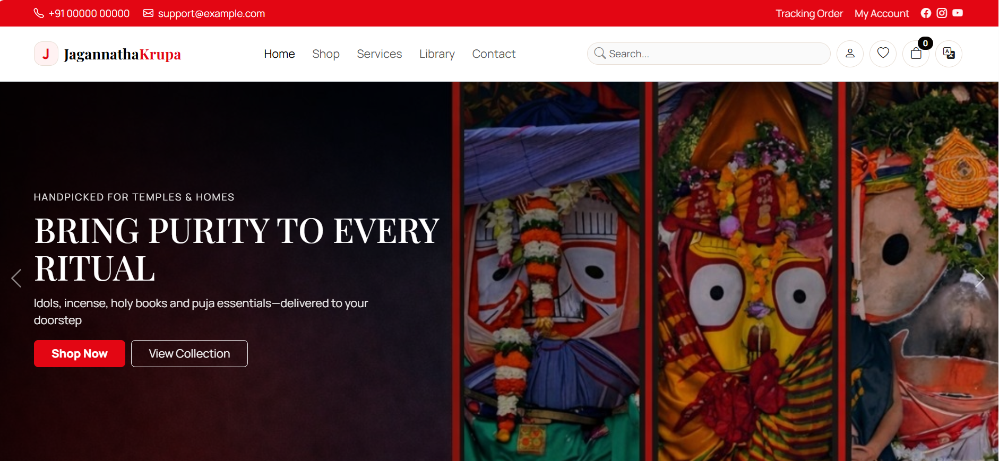

Jagannathakrupa – Your Trusted Guide for Jagannath Mandir Darshan in Puri & Sacred Services
For most of the devotees, a trip to the holy Jagannath Temple in Puri is not only a pilgrimage but also an emotional and spiritual call. Every year, millions of devotees visit Puri to receive the blessings of Lord Jagannath and feel the divine presence of the mandir. Jagannathakrupa was created with the sincere aim of helping devotees in their journey of Jagannath Mandir Darshan in Puri, making it a peaceful, informed, and spiritually satisfying experience. Through darshan help, seva guidance, bana hosting support, and genuine Jagannatha sacred items, Jagannathakrupa aims to serve each and every devotee with sincerity, devotion, and respect for the mandir traditions.
About Jagannatha Mandir in Puri
The divine Jagannath Temple, located in the holy city of Puri, stands as a powerful symbol of faith and devotion. Known as Jagannath Mandir, it is dedicated to Lord Jagannath, Lord Balabhadra, and Devi Subhadra, and holds a special place in Hindu spirituality. The temple's daily rituals, centuries-old traditions, and sacred atmosphere create a deeply spiritual experience for every devotee. Pilgrims from across India visit to seek blessings and experience the divine energy of Jagannath Mandir darshan in Puri. The temple is also widely respected for its Mahaprasad and the world-famous Rath Yatra festival.
Jagannath Mandir Darshan Time & Ritual Schedule
Jagannath Mandir darshan in Puri begins early in the morning at the sacred Jagannath Temple with Mangala Aarti.
Devotees can usually have darshan from around 5:00 AM onwards.
Certain afternoon hours are reserved for temple rituals and special offerings.
The mandir reopens in the evening and remains accessible until the night ritual of Badasinghara Besha.
Timings may change during festivals and auspicious days in Puri, so checking updated schedules is advised.
Jagannathakrupa provides dedicated mandir darshan assistance to help devotees plan a smooth and comfortable visit.
Bana Hosting Service Details
Bana hosting is a sacred offering connected to the traditions of the Jagannath Temple. Devotees sponsor the holy Patitapabana Bana as a symbol of faith, gratitude, and prayer to Lord Jagannath. Many visitors to Puri may not be familiar with the proper procedure and rituals involved. Jagannathakrupa provides simple guidance and coordination support to help devotees complete bana hosting smoothly and respectfully, following temple traditions.
Selling Jagannatha Sacred Items
Devotees who visit the sacred Jagannath Temple often wish to take home blessed and devotional items as a memory of their spiritual journey. Jagannathakrupa offers authentic Jagannatha sacred items such as Tulasi malas, Patitapabana Bana, photo frames, and other devotional products connected to the holy traditions of Puri. Each item is selected with care and devotion, ensuring spiritual significance and quality. Our aim is to help devotees stay connected to Lord Jagannath's blessings even after returning home.
How Jagannathakrupa Helps
Jagannathakrupa is committed to making your Jagannath Mandir Darshan in Puri smooth, organized, and spiritually fulfilling. We assist devotees through:
Guidance for darshan timings and temple visit planning at Jagannath Temple
Clear information about temple customs, rituals, and entry guidelines
Support and coordination for seva-related queries
Assistance with Bana Hosting procedures
Providing authentic Jagannatha sacred items from Puri
Dedicated support to ensure a peaceful and hassle-free spiritual journey
A Sacred Journey with Faith and Guidance
Experiencing Jagannath Mandir Darshan in Puri at the holy Jagannath Temple is a moment that stays in the heart forever. The divine atmosphere of Puri, the powerful rituals, and the blessings of Lord Jagannath create a sense of peace and spiritual fulfillment that words cannot fully describe. Proper planning and understanding of temple traditions help devotees make the most of this sacred opportunity.
Jagannathakrupa stands as a trusted guide for devotees seeking darshan assistance, seva support, bana hosting coordination, and authentic sacred items. Our mission is to serve with devotion and help every pilgrim experience a smooth and meaningful spiritual journey.
May Mahaprabhu Jagannath shower His divine grace upon you always. 🙏